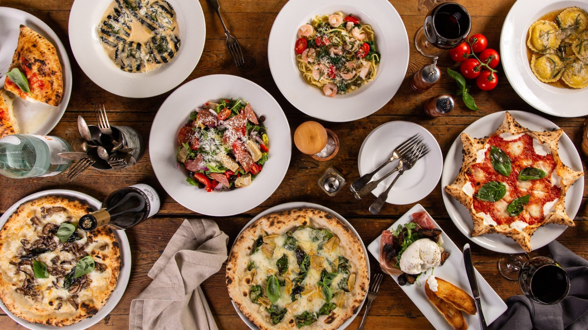

Award Winning Food & Drink
Based in Chicago, Illinois, Little Lemon is a family-owned Mediterranean restaurant,
focused on traditional recipes served with a modern twist. The chefs draw inspiration
from Italian, Greek, and Turkish culture and have a menu of 12–15 items that
they rotate seasonally. The restaurant has
a rustic and relaxed atmosphere with moderate prices, making it a popular place for a meal any time of the day.
What We Offer
At Little’s we are committed to catering for every taste using local produce wherever possible.
There is always a choice for the vegetarian and we can turn out a pretty good pizza too.
We have daily changing specials on our chalkboard, delicious homemade bread,
yummy puddings, homemade fudge with your coffee so there really is something for everyone.
To complement your meal we have an extensive wine list carrying some Decanter Award and Natural wines.
We look forward to seeing you in the near future.

Opening Hours
Tuesday - Saturday
Breakfast served 10.30am-12noon
Lunch served 12-2.30pm and 5-8.30pm(last order)
Bar open for drinks 11am - 11pm serving scones and pancakes
Sunday - Monday: Closed

What Our Customers Say
"Fantastic food, great setting wonderful
atmosphere whT more could you want. I would highly recommend LittleLemon, what ever your occasion is"
"As close to eating in Italia as you can get."
"Friendly, personalized service ensures we always have a fantastic evening!"